Uma pequena viagem por algumas das lembranças que ajudaram a construir a pessoa incrível que você é.
Começar essa história ✨Algumas memórias passam. Outras ficam com a gente para sempre.
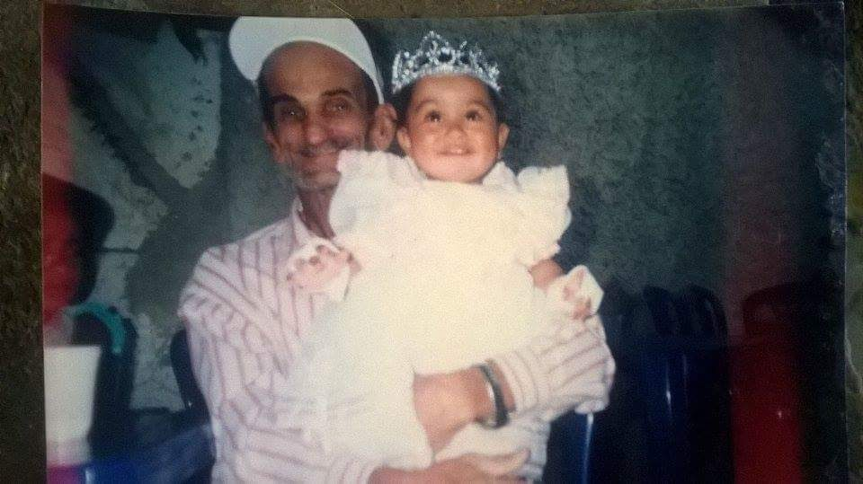
Antes de tantas aventuras, músicas e sonhos, existia essa pequena Nathalia. E ao lado dela, uma lembrança preciosa do nosso avô.
Algumas pessoas deixam lembranças que o tempo nunca consegue apagar. 🤍
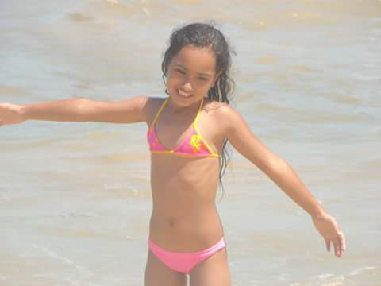
Descobrindo o mar, sentindo a areia e colecionando uma daquelas memórias que merecem ser guardadas para sempre.
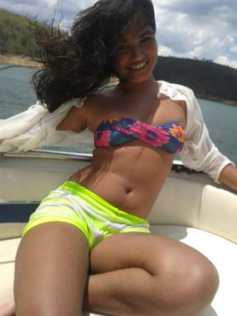
O tempo foi passando e vieram novas viagens, novos lugares e muitas histórias para contar.
Entre acordes, voz e sonhos, existe um jeito só seu de transformar sentimento em música.
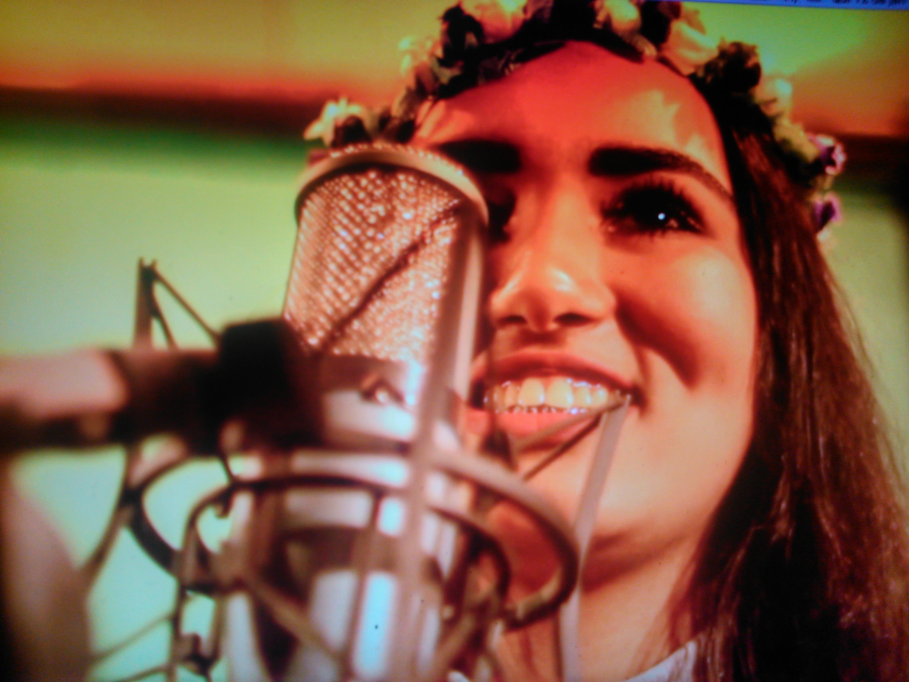
Uma promessa, uma música, uma gravação em estúdio — e uma lembrança de que sonhos merecem ganhar voz.
Uma noite feita para celebrar uma fase que estava terminando e outra que estava apenas começando.
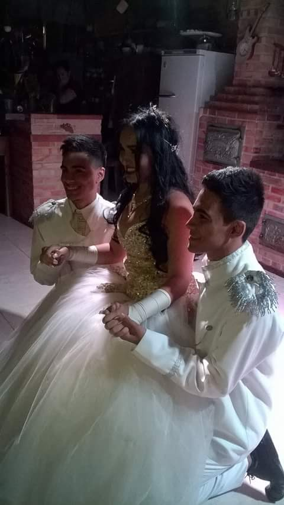
Uma festa, um vestido, pessoas importantes e uma Nathalia entrando em um novo capítulo da vida.
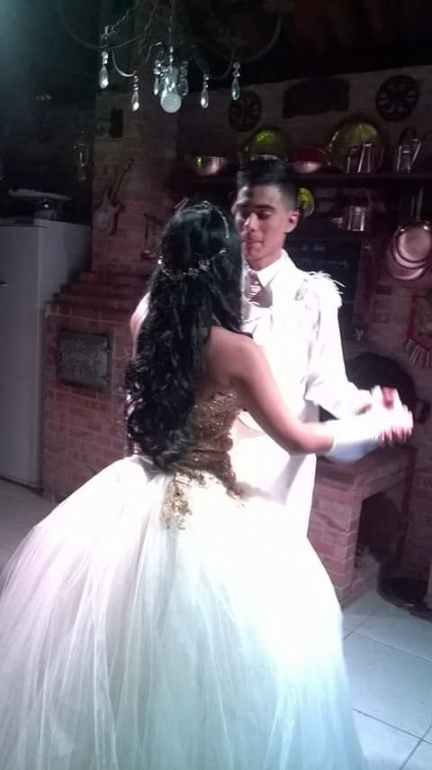
Porque algumas fotografias conseguem fazer a gente voltar no tempo por alguns segundos.
Família é onde nossa história começa. Entre pais, irmãos, avós, primos e tantas lembranças, existem pessoas que fizeram parte de cada fase da sua vida e ajudaram a construir quem você é hoje.
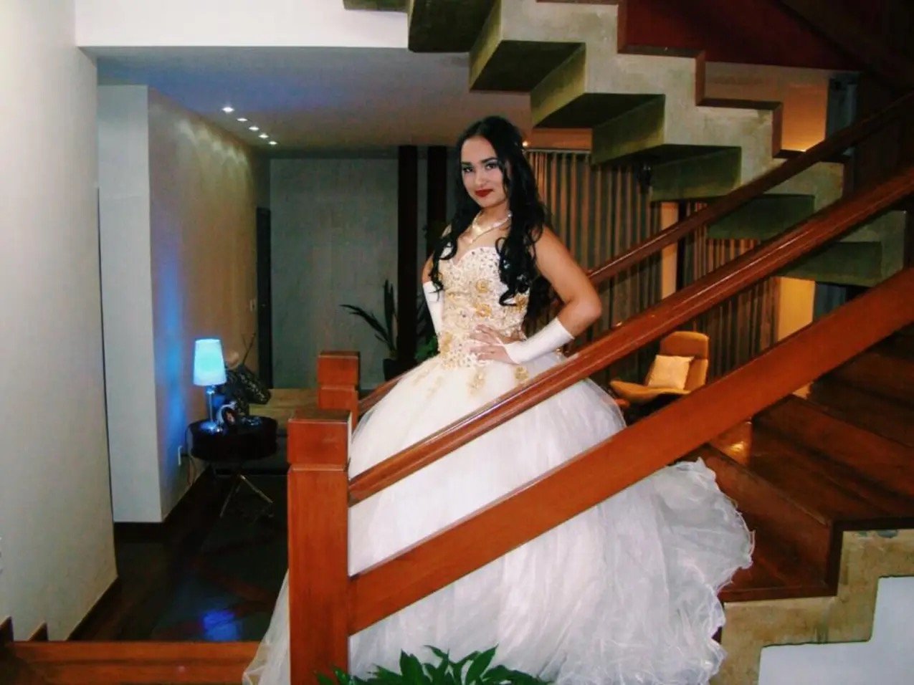
Uma lembrança especial de uma fase inesquecível, celebrando a pessoa que você já era e tudo o que ainda viria pela frente.
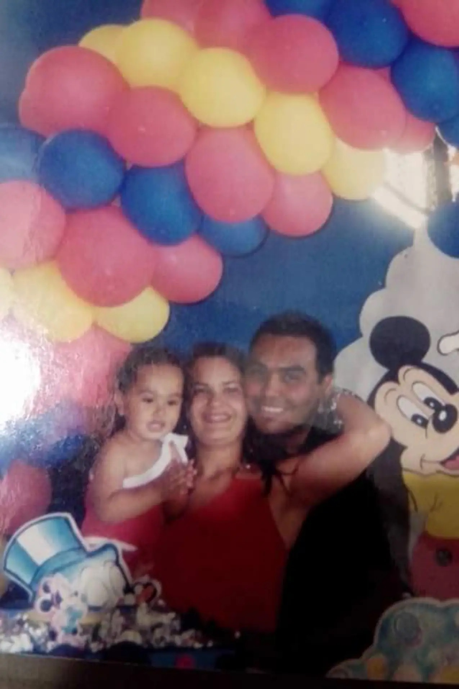
Uma lembrança da infância ao lado da nossa mãe e do nosso pai — parte da base de tantas histórias que vieram depois.
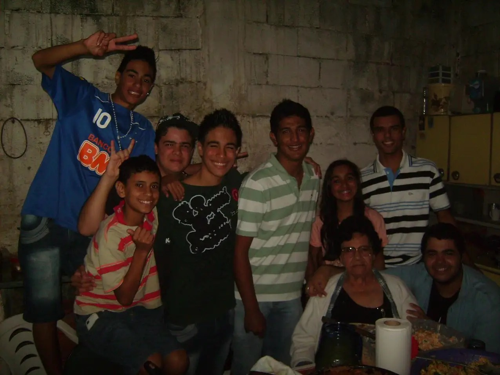
Uma fotografia cheia de gente, histórias, risadas e lembranças que o tempo não apaga.
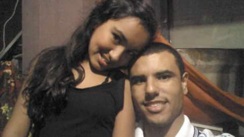
Primos, lembranças e histórias que fazem parte dessa caminhada.
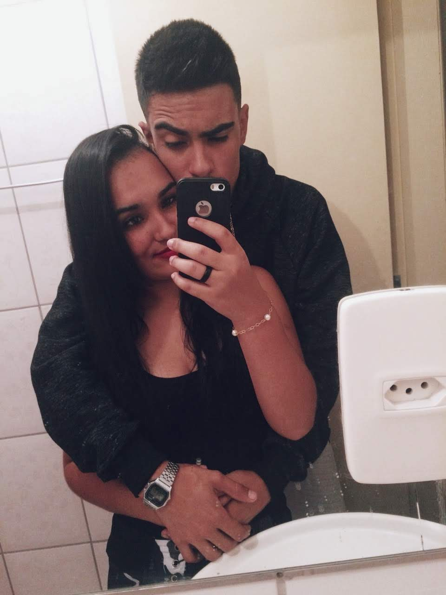
Podemos crescer, mudar e seguir caminhos diferentes, mas algumas coisas nunca mudam. Você sempre será minha irmã.
E eu sempre vou torcer por você.
Toque no presente.